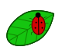

Identify Agricultural Pests
Protect Your Crops
Pest2Veg helps UK growers identify common crop pests and learn how to manage them responsibly.
Identify a Pest Browse Gallery
Everything You Need to Protect Your Crops
Identify pests, understand the signs and learn how to manage them responsibly.
Identify Pests
Select your crop and the symptoms you can see to find possible pest matches.
Identify a PestLearn & Compare
Explore common agricultural pests and compare their appearance, affected crops and signs of damage.
Browse Pest GalleryProtect Your Crops
Learn practical management and prevention methods to help reduce pest damage.
View ResourcesSupport Food Security
Discover how responsible pest management can support sustainable food production.
Learn MoreHow Identifying a Pest Works
Use three simple steps to find possible pest matches.
Select Your Crop
Choose the crop that is showing signs of pest damage.
Select the Symptoms
Choose the signs and symptoms you can see on your crop.
View Possible Matches
Review possible pest matches and learn more about identification and management.
Pest2Veg provides possible pest matches for informational purposes. Always confirm identification before taking action.